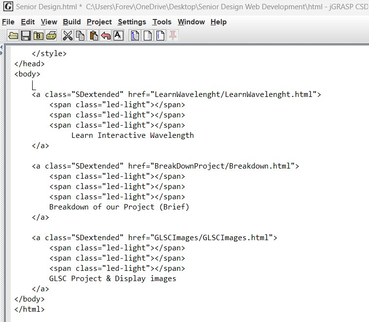
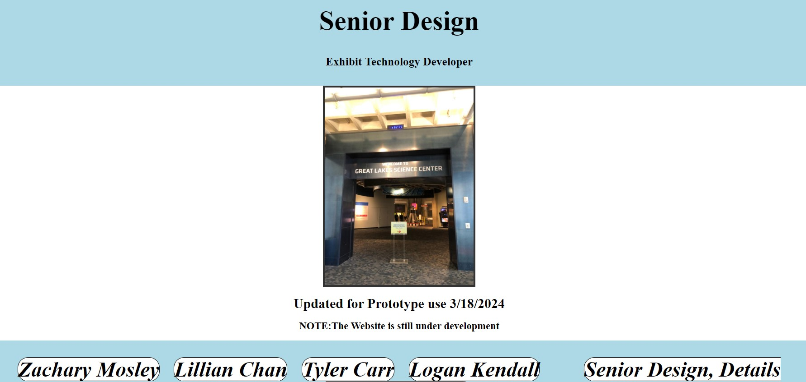
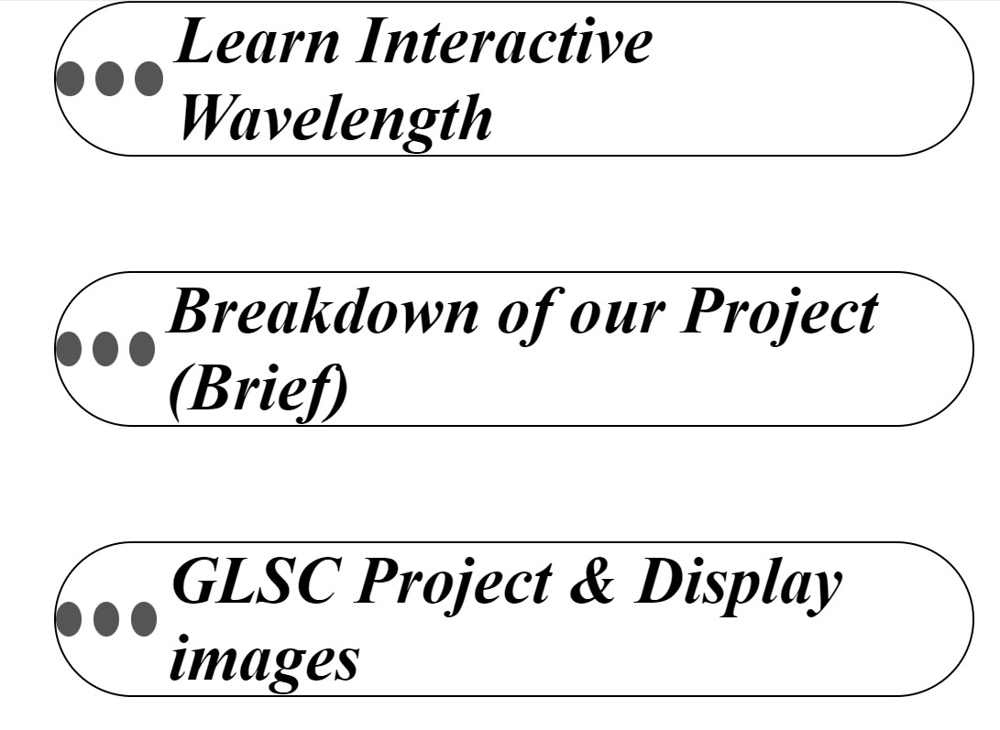

Group Role → 💻 Team Website Developer 💻
Zachary's Brief Description
"
Zachary Mosley uses HTML (Hypertext Markup Language), CSS (Cascading Style Sheets), and JavaScript for the team website of the interactive display. Zachary used extensive knowledge in HTML to determine the buttons and the specifics of the destination. HTML is used in combination with other tools like JavaScript to improve functionality for the user, for example, "hovering-animations." The goal of HTML is to enhance the user's ability to interact with the website. Another part of designing the website is CSS, which allows the HTML scripts to have styles added in addition to the pre-existing functionality.
CSS created the style of the link and provided a more pleasing button for the user.
The website also has advanced scripts, which are functions triggered from interactions like hovering over a button, consistent shadowing (glowing), or image transitions.
"



♦Computer Engineer, Zachary♦